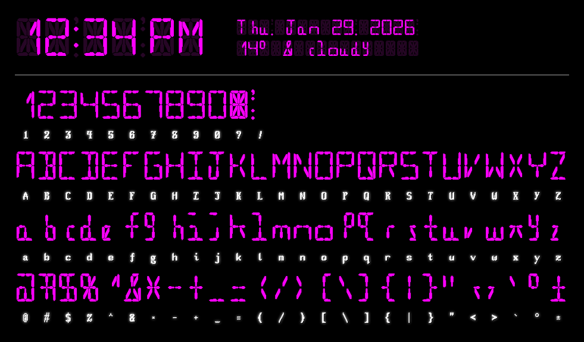

Segris 16 - pixel font for clocks & more
Download Segris 16:
This content is licensed under Creative Commons BY-SA 3.0.
![]()
Segris 16 is a pixel-based 16-segment display font. It mimics fancy LCD or LED alphanumerical displays of older tech and appliances. Unlike other segment display fonts, Segris is a bitmap font (though it is a vector format for compatability). It intentionally avoids the sharp angled lines of other typefaces in order to blend a variety of aesthetics while still looking clean.

For functionality, some characters are reserved for typesetting purposes. However, they are not wasted, since they couldn't have been displayed aesthetically anyways.
The question mark character, `?`, is mapped to a all-on placeholder. It displays all segments in the 16-segment main display. This character is meant to be displayed behind other characters to simulate an LCD panel effect. That is, you can place a layer containing `??:??` set to a low opacity behind the main layer, `12:34`, for a fake LCD effect.
The exclamation point character, `!`, is mapped to the separator placeholder. It displays the colon, decimal point, and apostrophe combined. Similar to the all-on placeholder, `?`, the separator placeholer is meant to be displayed behind the actual separator for aesthetic effect.
The space character ` `, and the non-breaking space character, ` `, are both exactly the same width as the separators, which include `:`, `.`, and `’`. To achieve a blinking time separator, simply alternate between the separator and a blank space.
Three space characters equal the same total width as one 16-segment character, so you can use triplets of spaces to represent entirely blank characters. If spaces are collapsed in text rendering, you can:
- use non-breaking space, ` ` (HTML entity ), instead.
- set "white-space-collapse: preserve;" in CSS.